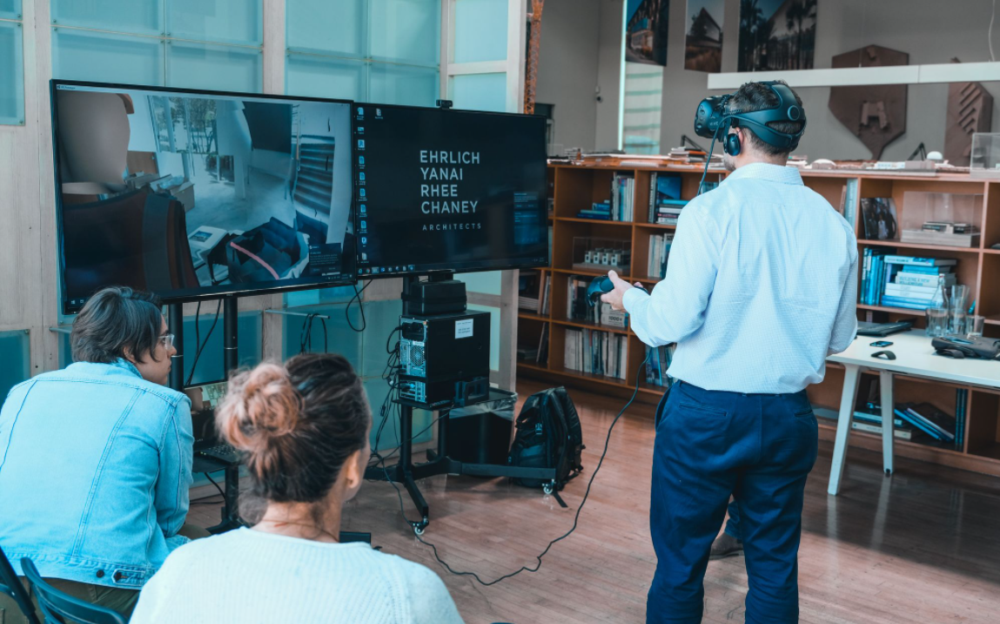

A hologram of a remote inspector, reviewing the jobsite as if he really stood there.
Clone - Next-Gen Remote Communication
Clone let architects walk remote job sites in VR using real-time 3D scans.
On-site managers saw them as holograms via HoloLens 2 or iPads. An AR/VR/Web Platform.
I co-founded Clone in 2018 as CEO, raised $1M, grew to a team of 6, and piloted with over 10 construction companies in the US and Japan.

Real-time scanning & streaming. View from the web app.
We developed our own real-time 3D scanning & streaming technology: our AR software captured depth and RGB data, sent it to a rendering server that generated the 3D scan and streamed it in real time to any visitor device (VR or web).

From the site manager's POV: The architect as a hologram.
Site Managers used AR (Hololens / iPad) to see architects as holograms in their physical space. Looking around with their device also real-time scanned and streamed their space to their architect's devices.
From the architect POV. Can view on web or VR.
Architects could choose between VR or our Web Platform to participate in the meeting and be immersed in the Site managers' physical location.
Waterproofing training.
A real window waterproofing training held by 2 engineers, in one of our pilots in LA.

From EYRC architects in LA, a pilot with Del Amo Construction.